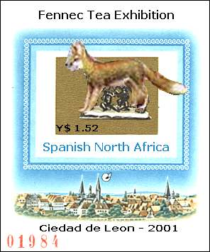

FENNEC TEA ISSUE
Answering a popular demand, the SNA Postal Administration has issued a sheet dedicated to the famous Fennec Tea, the traditional drink of the Spanish North Africa. Please see below for explanations referring to some questions we have recently found on RCSD.

I am very concerned about fennec
tea (which may be the world's only non-vegetarian tea):
-- Is vegetarian fennec (faux fennec) tea available?
A: Of course. BTW, it isn't vegetarian and the fennecs
are more than real. Everything else is correct.
-- What parts of the fennec are
used in making the tea?
A: The process is too complicated to be described
here. Please take a look at the sheet.
-- Are wild fennecs or
domesticated fennecs used in the production of fennec tea?
A: Only wild fennecs, and only females.
-- If wild fennecs are used, can
their population support the fennec tea industry?
A: Well, yes. The fennecs are used only during the
first 3 days after the birth of our male citizens, and later only when the
milk supply isn't assured.
-- What is the proper etiquette
for drinking fennec tea? Should it drunk from a cup or a mug? Is it proper
to squirt a bit of camel milk into it directly from the camel, or should the
milk first be squirted into a camel milk decanter?
A: The proper etiquette is shown above. It is the only
one accepted by our legislation.
-- It is rumored that fennec tea
is an aphrodisiac. Should we let Victor drink it?
A: Like every SNA citizen, Victor has used, but has
not abused of this delicious drink. BTW, some like it hot.
-- It is also rumored that
shares in SNA Fennec-T Corp. are soon going to be offered on all of the
major stock exchanges, including SNADEX. Should I invest my life savings in
fennec tea stock? Your advice may make all the difference!
A: We at the SNA Philatelic Marketing suggest that you
rather invest in our sheets, but other options can be only recommended.
-- Has fennec tea been
commemorated on any SNA stamps? If not, how soon can we expect such stamps,
how many trillion will be printed, and can I buy one (1), and what will
their catalogue value be? Will they be a good investment? Your answer(s)
will make all the difference.
A: The sheets are immediately available worldwide.
They were issued on the 1st of June, the International Children's Day. The
print run is limited to 100,000 pieces, all numbered. As usually, the first
sheet went to the SNA Postal Museum and the last one to the UPU. Please
contact the SNA Philatelic Dept. for conditions and availability.
Links:
-
Joint Issue Switzerland - SNA
-
Swiss Embroidery Stamp
-
SNA - Easter
-
SNA - Error
|
|